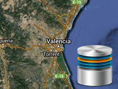

Example of interception request download to tiles.
Usage instructions:
This is just example. To make it work you need to add code of loading tiles (line 21).
Add this script to map GameObject.
This is just example. To make it work you need to add code of loading tiles (line 21).
Add this script to map GameObject.
CustomDownloadTileExample.cs
/* INFINITY CODE 2013-2016 */
/* http://www.infinity-code.com */
using UnityEngine;
namespace InfinityCode.OnlineMapsExamples
{
[AddComponentMenu("Infinity Code/Online Maps/Examples (API Usage)/CustomDownloadTileExample")]
public class CustomDownloadTileExample : MonoBehaviour
{
private OnlineMaps api;
private void Start()
{
api = OnlineMaps.instance;
api.OnStartDownloadTile += OnStartDownloadTile;
}
private void OnStartDownloadTile(OnlineMapsTile tile)
{
Texture tileTexture = new Texture();
// Here your code to load tile texture from any source.
// Apply your texture in the buffer and redraws the map.
if (api.target == OnlineMapsTarget.texture)
{
tile.ApplyTexture(tileTexture as Texture2D);
api.buffer.ApplyTile(tile);
}
else
{
tile.texture = tileTexture as Texture2D;
tile.status = OnlineMapsTileStatus.loaded;
}
api.CheckRedrawType();
}
}
}